App Building Components
App Designer and UI figures support a large set of components for designing modern, full-featured applications. The tables below list the components that are available.
Common Components — Include components that respond to interactions, such as buttons, sliders, drop-down lists, and trees.
Axes — Include axes to create plots for data visualization and exploration.
Containers and Figure Tools — Include panels and tabs for grouping components, as well as menu bars.
Instrumentation Components — Include gauges and lamps for visualizing status, as well as knobs and switches for selecting input parameters.
Extensible Components — Include custom UI components that you author. Interface with third-party libraries to display content like widgets or data visualizations.
Toolbox Components — Include toolbox authored UI components. Requires additional toolbox license and installation.
All components are available programmatically. Most UI components are also available in the App Designer Component Library for you to drag and drop onto the canvas. To add components to an App Designer app that are not available in the Component Library, or that you want to add dynamically to the running app, see Add UI Components to App Designer Programmatically.
When calling graphics functions in App Designer, the workflow is slightly different than you typically use at the MATLAB® command line. For more information about how to call graphics functions in App Designer, see Display Graphics in App Designer.
Common Components
| Component Information | Example |
|---|---|
Button |
|
CheckBox |
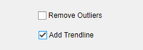
|
ColorPicker |
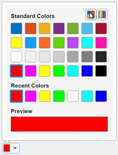
|
DatePicker
| 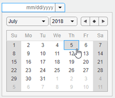 |
DropDown |
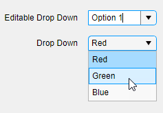
|
NumericEditField |
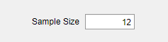
|
EditField |
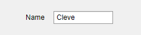
|
Hyperlink
|
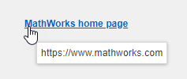
|
Image
| 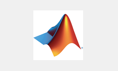 |
Label |
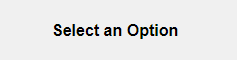
|
ListBox |
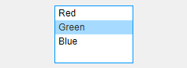
|
ButtonGroupRadioButton |
|
Slider |
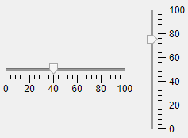
|
RangeSlider |
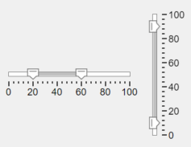 |
Spinner |
|
StateButton |
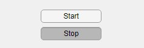
|
Table |
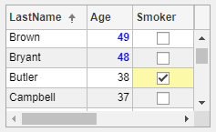
|
TextArea |
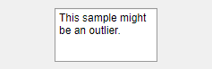
|
ButtonGroupToggleButton |
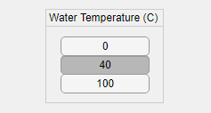
|
TreeTreeNode |
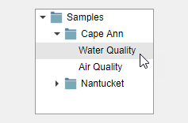
|
CheckBoxTreeTreeNode |
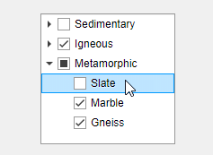
|

Axes
| Axes Information | Example |
|---|---|
| UIAxes Properties |
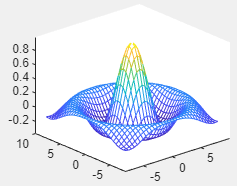
|
| Axes Properties This object can be added programmatically only. | 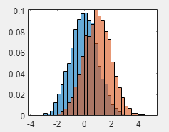 |
| GeographicAxes Properties This object can be added programmatically only. |
|
| PolarAxes Properties This object can be added programmatically only. | 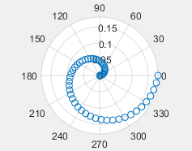 |

Containers and Figure Tools
| Container Information | Example |
|---|---|
| 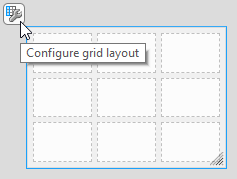 | |
Panel |
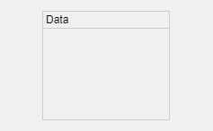
|
TabGroupTab |
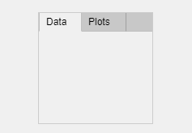
|
Menu |
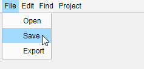
|
ContextMenu | 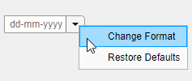 |
ToolbarPushToolToggleTool | 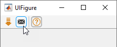 |
Dialogs and Notifications
| Dialog Information | Example |
|---|---|
uialertThis object can be added programmatically only. | 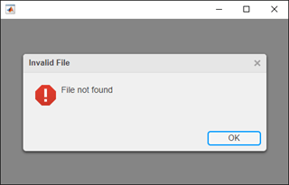 |
uiconfirmThis object can be added programmatically only. | 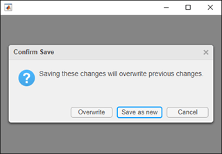 |
uiprogressdlgThis object can be added programmatically only. | 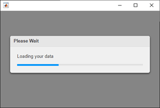 |
uisetcolorThis object can be added programmatically only. | 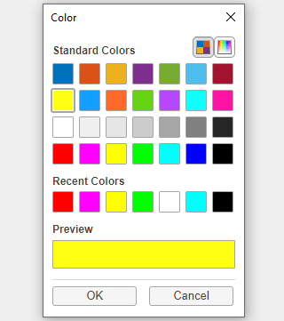 |
uigetfileThis object can be added programmatically only. | 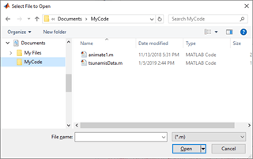 |
uiputfileThis object can be added programmatically only. | 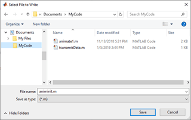 |
uigetdirThis object can be added programmatically only. | 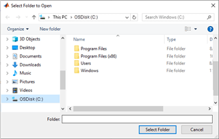 |
uiopenThis object can be added programmatically only. |
|
uisaveThis object can be added programmatically only. | 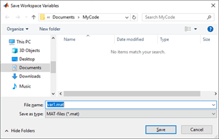 |

Instrumentation
| Component Information | Example |
|---|---|
Gauge |
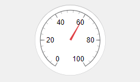
|
NinetyDegreeGauge |
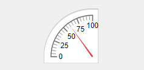
|
LinearGauge |
|
SemicircularGauge |
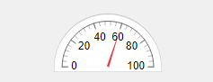
|
Knob |
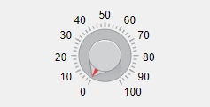
|
DiscreteKnob |
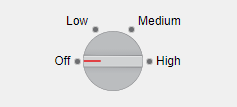
|
Lamp |
|
Switch |
|
RockerSwitch |
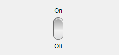
|
ToggleSwitch |
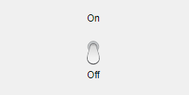
|
Extensible Components
| Component Information | Example |
|---|---|
| 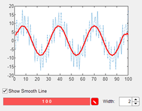 | |
HTML |
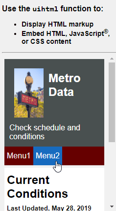
|
Toolbox Components
Apps created in App Designer or with the uifigure
function support components in multiple additional products. To use
these components, a valid license and installation of the associated
product is required.
Aerospace Toolbox components — For more information, see Flight Instruments (Aerospace Toolbox).
Simulink® components — For more information, see Create Apps to Control Simulations (Simulink).